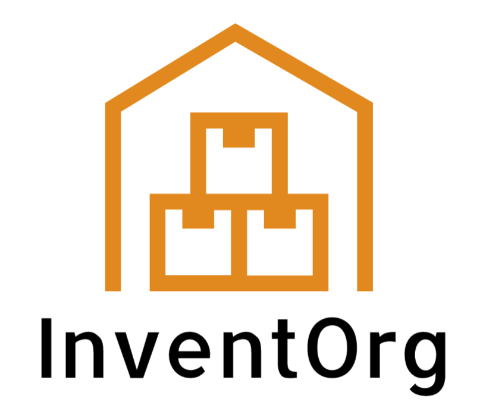

<!--navigation bar-->
<div class="navbar">
    <!--logo which brings user to dashboard-->
    <a id="logo" style="float:left;" routerLink="/dashboard"></a>

    <!--navigation to other components-->
    <ul class="navbtn">
        <li><a routerLink="/inventory">Inventory</a></li>
        <li><a routerLink="/message">Message</a></li>
    </ul>

    <!--user which brings user to settings/log out etc-->
    <a id="user" style="float:right;" routerLink="/user"></a>
</div> <!--end of top navigation bar-->

<!--code from other components, inbetween navbar and footer-->
<div class="main">
  <router-outlet></router-outlet>
</div>

<!--footer underneath component container-->
<footer>
  <!--used for footer columns-->
  <div class="foot">
    <h6>START A PROJECT<br>We are ready for the challenge<br>sales@inventorg.com</h6>
  </div>

  <div class="foot">
    <h6>SAY HELLO<br>497 Evergreen Rd. Roseville, CA 95673<br>+44 345 678 903</h6>
  </div>

  <div class="foot">
    <h6>QUESTIONS<br>We are happy to answer questions<br>help@inventorg.com</h6>
  </div><!--end of footer columns-->

  <!--social media links-->
  <div class="social">
    <a style="margin-bottom: 20px" href="https://instagram.com"></a>
    <a href="hhtps://twitter.com"></a>
    <a  href="https://facebook.com"></a>
  </div>

  <br><br><br><br>
  <h4 style="text-align: center;">InventOrg</h4>
</footer>

